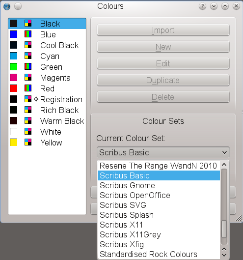
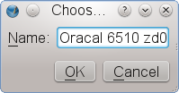

To change the default color palette, make sure that no Scribus document is open. Then open the Color Manager (Edit > Colors):
|  |
In the dialog you can select a new default palette for new documents. Any change you make here will not affect existing documents, as the color palette in such a document has been stored in the document itself. Some of the color palettes shipped with Scribus have been created for special purposes, so before you select another default palette, you should learn something about the color sets from the descriptions provided in subsequent sections. In some cases, your printer or a client may insist on the use of certain colors.
Caution!
Previous versions of the documentation have indicated that colors in the color sets included with Scribus are locked – this may not be the case, since it is dependent on where the palettes are stored on your system, and whether you have write access there. If you are editing colors with no document open, with a customized location for Scribus, you may be able to edit any color from any palette. If you then click OK, you have changed this palette for future use. On the other hand, if you have a document open, make such a change and OK, you will only change this color for that particular document. Even so, it is probably not a good idea to do this, so that you avoid confusion, since if you import something from that document to another, there may be unexpected problems due to the color name clash.
For proprietary spot colors, the color name will dictate what will be applied, so changing its appearance in Scribus will be another source of confusion and error.
What you might notice immediately when you open the dialog is that you can’t edit any color in one of the palettes that are shipped with Scribus (most likely with a standard Linux installation). This is a feature, not a bug, as the very purpose of standardized colors is to work across documents, computers or platforms with identical colors, which in turn have unique color values and color names. Thus, all color palettes that have been installed to directories to which you have read-only access are “locked”, i.e. prevented from editing.
Sometimes, however, there are good reasons to edit a locked palette anyway, for example, if you need to reduce the number of colors in a palette for a certain project, i.e. if you need to create a “project palette”. In such a case you can click on the “Save Color Set” icon in the Color Manager. This will save the palette to your home directory and will add the copy to the list of available color sets. If you select the copy of the palette, you will notice that the editing options are now available. Be aware, though, that clicking “OK” will make all changes to the copy permanent!
|  |
If you have bought or downloaded standardized palettes from a third party vendor and you can’t acquire root/Administrator privileges on the system you are working on, you are advised to copy the palette files into a special folder in your home directory. If you have root/Administrator permissions, you can also copy the sets into a folder in the install directory. Please read the licensing conditions for the files you wish to install, as they may limit the number of permitted users per palette.
Here are the relevant paths for the supported operating systems:
If you have installed Scribus with a package management system like RPM, DEB or BSD Ports, the palette files need to be copied to either /usr/lib/scribus/swatches or /usr/local/lib/scribus/swatches. On 64 Bit systems they may be found in /usr/lib64/scribus/swatches or /usr/local/lib64/scribus/swatches respectively if a 64 Bit version has been installed. The actual location depends on the configuration of a distribution’s package manager.
Those who compiled Scribus themselves need to copy the palette files to installation_directory/share/scribus/swatches.
If you don’t have root permissions, you can also copy the files to /home/user_name/.scribus/swatches/locked.
You have to create the folder locked if doesn’t exist.
Copy the palettes into the directory /Library/Preferences/Scribus/swatches/locked in your Home directory.
Note that on Mac OS 10.7 the /Library directory is hidden by default. To make it visible, use Go > Go to Folder in Finder, then type ~/Library. Alternatively you can also press the Option key while clicking on Go in Finder. If you want to make the directory permanently visible, open a Terminal and type the following command: chflags nohidden /Users/[username]/Library/.
If the folder locked doesn’t exist, you have to create it.
Copy the palettes to the directory C:\Scribus-{version}\scribus\lib\swatches\locked.
If the folder locked doesn’t exist, you have to create it.
Copy the palettes to the directory /boot/apps/Scribus/share/scribus/swatches or /boot/home/config/settings/Qt/.scribus/swatches/locked.
Copy the files to the folder C:\Program Files\Scribus {version}\share\swatches.
If you don’t have Administrator permissions, you can copy the files to your user directory. On Windows 2000, XP and 2003 this is
C:\Documents and Settings\username\Application Data\Scribus\swatches\locked, and on Windows Vista, 7 and 8 it’s
C:\Users\username\AppData\Roaming\Scribus\swatches\locked.
If the folder locked doesn’t exist, you have to create it.